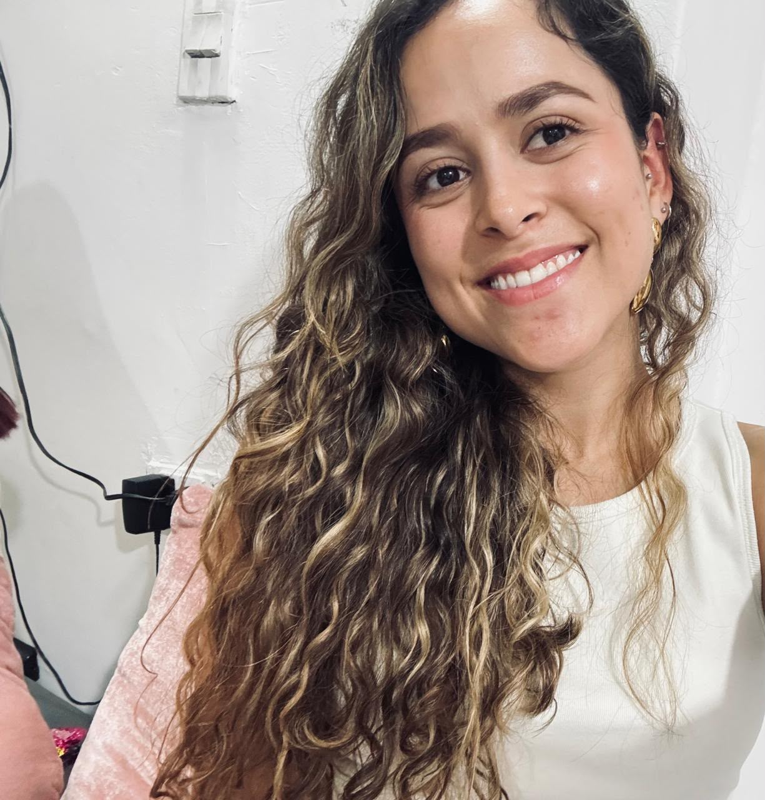
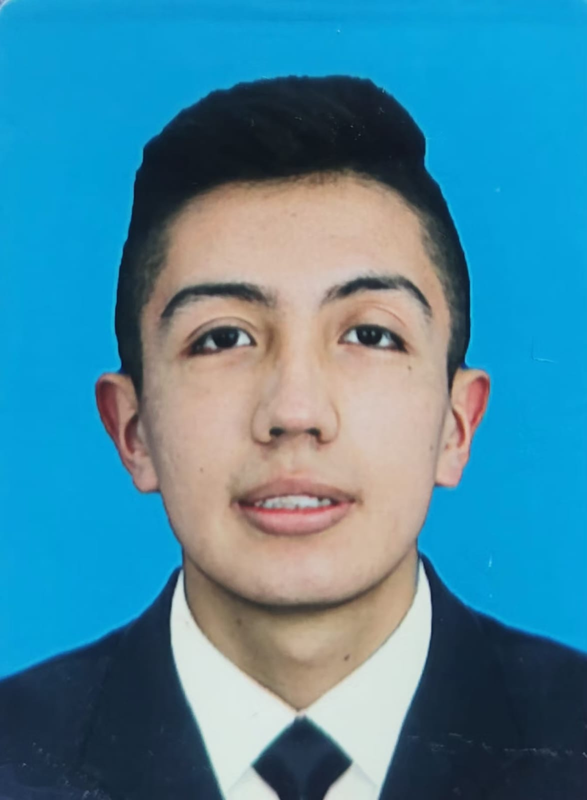
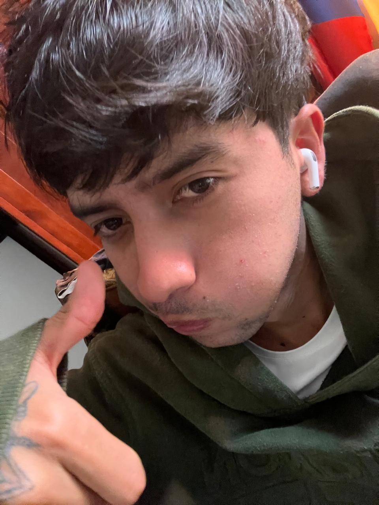

Presentación del equipo
¿Quiénes somos?

Yulieth Carolina Rojas R.Medellín, Antioquia
Administración de empresas
tengo 22 años. Soy una persona a la que le encanta el deporte, disfrutar de los momentos en familia y estar en contacto con el campo. Actualmente trabajo en Cueros Vélez, donde he tenido la oportunidad de adquirir nuevas experiencias y aprendizajes tanto personales como profesionales. También tengo un compañero muy especial: mi perro Río, que hace parte importante de mi familia. 🐶❤️.

Maickol Alejandro Alarcón R.Zipaquirá, Cundinamarca
Ingeniería de software
Interesado en la tecnología y el desarrollo de software.
Me gusta aprender nuevas herramientas y trabajar en equipo.
Ocaña, Norte de Santander
Ingeniería de software
33 años, Me gusta la musica, soy musico, y tengo dos hijos con los que me gusta compartir tiempo..
Ibagué, Tolima
Ingeniería de software
Interesada en el aprendizaje constante y el trabajo colaborativo.
Me gusta aportar soluciones creativas a los proyectos.
Cundinamarca, Bogotá
Ingeniería de software
25 años, Me gusta muchísimo leer, me gusta bastante la cultura japonesa y en especial su comida, y lo que más me gusta es viajar..

Luis Fernando Riascos M.Pasto, Nariño
Ingeniería de software
Soy Luis Fernando Riascos, tengo 22 años y soy tecnólogo en Análisis y Desarrollo de Software. Estoy finalizando mi carrera en Uniminuto. Me apasiona la tecnología, disfruto ser creativo y encontrar soluciones innovadoras 🤖.
Comunidad
¿Con qué comunidad o grupo social vamos a trabajar?

Ubicación
¿Dónde se encuentra ubicada?
Modalidad
¿En qué modalidad haremos la práctica?
Título de la entrada
El punto de partida: identificando necesidades digitales
Problemática y contexto
¿Qué necesidad estamos atendiendo?
| Nombre del lugar | Latitud | Longitud |
|---|---|---|
| Medellín, Antioquia (Yulieth) | 6.2641267634196565 | -75.61289214480745 |
| Zipaquirá, Cundinamarca (Maickol) | 5.004 | -73.978861 |
| Ocaña, Norte de Santander (Cristian) | 8.241342 | -73.354319 |
| Bogotá, Cundinamarca (Luisa) | 4.661257 | -74.081933 |
| Bogotá, Cundinamarca (Wilson Daniel) | 4.675507858088218 | -74.09731686766843 |
| Pasto, Nariño (Luis Fernando) | 1.219889 | -77.267396 |
Objetivos
Objetivo general
Fortalecer las competencias y la confianza digital de las personas adultas mayores mediante capacitaciones prácticas sobre el uso seguro del celular y de las herramientas y servicios digitales.
Objetivos específicos
- 1 Enseñar el uso básico y seguro del celular: WhatsApp, llamadas, videollamadas, contactos, cámara y actualizaciones.
- 2 Enseñar a reconocer estafas digitales: mensajes y llamadas sospechosas, suplantación de familiares y falsas promociones.
- 3 Explicar la protección de datos y contraseñas, y cómo crear una contraseña segura.
- 4 Capacitar sobre el uso seguro de aplicaciones para trámites, pagos y servicios bancarios.
- 5 Fortalecer la alfabetización digital y la autonomía de los participantes para desenvolverse en internet con confianza.
Justificación
¿Por qué este proyecto importa?
Referencias
Fuentes consultadas (normas APA)
- Ministerio de Tecnologías de la Información y las Comunicaciones. (2019). Adultos mayores salieron del analfabetismo digital y entraron al mundo de las TIC. MinTIC. https://mintic.gov.co/portal/inicio/Sala-de-Prensa/Noticias/124707:Adultos-mayores-salieron-del-analfabetismo-digital-y-entraron-al-mundo-de-las-TIC
- Mayor Vida. (2025). Alfabetización digital en personas mayores: un reto para Colombia. https://mayorvida.com/blogs/alfabetizacion-digital/